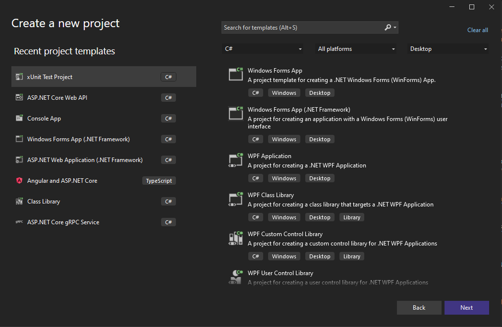
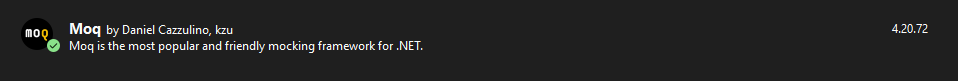
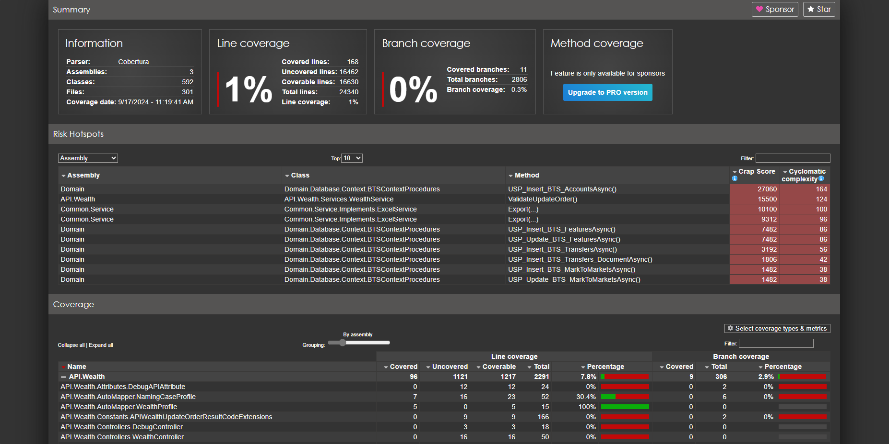
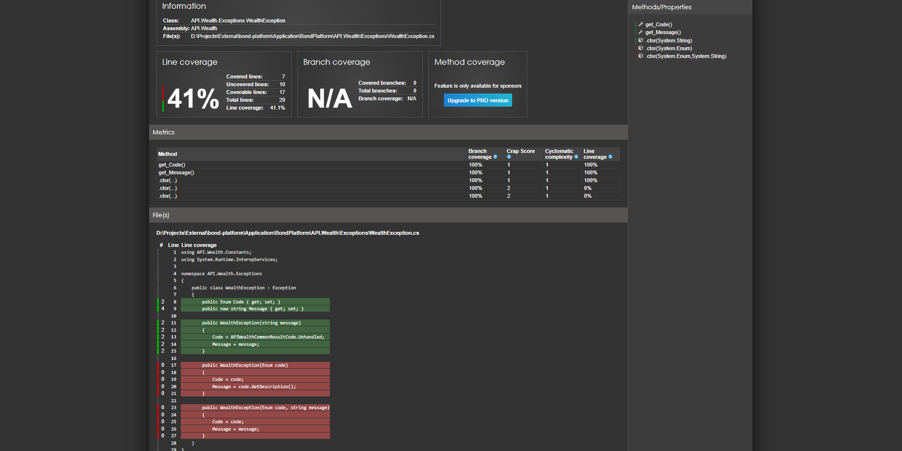

Unit testing คือการทดสอบโปรแกรมหรือโค้ดในระดับหน่วยย่อย เพื่อให้แน่ใจว่าส่วนหนึ่งของโค้ดสามารถทำงานได้ถูกต้องตามที่คาดหวัง โดยทั่วไปแล้ว หน่วยย่อยของโค้ดอาจจะหมายถึงฟังก์ชัน เมธอด หรือคลาสในโปรแกรม
xUnit คือเฟรมเวิร์คสำหรับการทดสอบหน่วยย่อยที่ใช้กันอย่างแพร่หลายใน .NET Framework และ .NET Core ซึ่งถูกพัฒนาต่อมาจาก NUnit ถูกออกแบบมาให้เรียบง่ายโดยเน้นไปที่การลดความซับซ้อนและเพิ่มประสิทธิภาพใน การทดสอบแบบขนาน
xUnit, NUnit และ MSTest ทั้ง 3 ตัวเป็นเฟรมเวิร์คที่ใช้ในการทำ Unit Testing ใน .NET มีความเหมือนกันในด้านของการทำงาน และมีแตกต่างกันในด้านของการออกแบบ ฟีเจอร์ และแนวทางในการใช้งาน
NUnit
[SetUp], [Test], [TearDown], [TestCase(1, 2, ExpectedResult = 3)], [Category]
[SetUp]
public void Setup() { }
[Test]
public void TestMethod() { }
[TearDown]
public void Cleanup() { }
xUnit
xUnit จะไม่มีแอตทริบิวต์ [SetUp] หรือ [TearDown] แต่จะใช้ constructor หรือ IDisposable สำหรับการตั้งค่า / ล้างทิ้ง
[Fact], [Theory], [InlineData(1, 2, n)], [Trait]
public class MyTestClass : IDisposable
{
public MyTestClass() { /* SetUp */ }
[Fact]
public void TestMethod() { }
public void Dispose() { /* TearDown */ }
}
MSTest
[TestInitialize], [TestMethod], [TestCleanup], [DataTestMethod], [DataRow(1, 2, 3)], [TestCategory]
[TestInitialize]
public void Setup() { }
[TestMethod]
public void TestMethod() { }
[TestCleanup]
public void Cleanup() { }
Moq เป็นเครื่องมือสำหรับการจำลองออปเจคในการทดสอบหน่วยย่อยของแอปที่พัฒนาด้วย .NET เพื่อสร้างและควบคุมพฤติกรรมของออปเจคโดยไม่ต้องพึ่งพาส่วนที่เป็นการทำงานจริง เช่น การใช้งานฐานข้อมูล หรือการเรียก API ภายนอก
การทำ Unit Testing บน C# จะมีเฟรมเวิร์คต่างๆ มากมาย เช่น NUnit, xUnit และ MSTest โดยในหัวข้อนี้เราจะยกตัวอย่างการใช้ xUnit
เราสามารถสร้างโปรเจคสำหรับทำ Unit Testing ได้ที่เทมเพลตของ Visual Studio วิธีการตามภาพด้านล่าง
และ Moq เราสามารถติดตั้งผ่าน NuGet
หลักการ AAA (Arrange, Act, Assert) เป็นหลักการที่ช่วยให้การเขียนโค้ดมีความชัดเจนและเป็นระบบมากขึ้น โดยจะแยกออกเป็นขั้นตอน
Arrange (เตรียมการ)
ขั้นตอนในการเตรียมการทดสอบ เช่นการจำลองออปเจค, ค่าเริ่มต้น
รวมถึงตัวแปรต่างๆ
ที่จะใช้ทดสอบ
Act (ลงมือ)
ขั้นตอนของการทดสอบ โดยขั้นตอนนี้จะเป็นการเรียกใช้โค้ดที่จะทดสอบ
โดยอาจจะเรียกเป็นฟังก์ชั่นหรือเมธอดที่ต้องการตรวจสอบว่าทำงานได้ถูกต้องหรือไม่
Assert (ตรวจสอบผลลัพธ์)
เราจะทำการตรวจสอบผลที่ได้จากขั้นตอนก่อนหน้าโดยนำมาเปรียบเทียบกับผลที่คาดหวัง
เพื่อให้มั่นใจว่าโค้ดทำงานได้ถูกต้อง
[Fact]
public void Summary()
{
// Arrange
// Act
// Assert
}
ต่อไปเรามาลองสร้าง Test Case
Fact ใช้สำหรับการทดสอบที่ไม่ต้องการข้อมูลทดสอบหลายชุด เหมาะสำหรับการทดสอบที่มีผลลัพธ์เดียว
private decimal Summary(decimal n1, decimal n2) { return n1 + n2; }
[Fact]
public void Summary_Should_Correct()
{
// Arrange
var n1 = 2;
var n2 = 3;
var expect = 5;
// Act
var result = Summary(n1, n2);
// Assert
Assert.Equal(expect, result);
}
public class UnitTest1
{
private decimal Summary(decimal n1, decimal n2) { return n1 + n2; }
[Theory]
[InlineData(2, 3, 5)]
[InlineData(3, 9, 12)]
[InlineData(-2, -9, -11)]
public void Summary_Should_Correct(decimal n1, decimal n2, decimal expect)
{
// Arrange
// Act
var result = Summary(n1, n2);
// Assert
Assert.Equal(expect, result);
}
}
ก่อนอื่นเรามาทำความรู้จักกับ Test Double กันก่อน
Test Double หมายถึงออปเจคที่ถูกสร้างขึ้นเพื่อแทนที่การทำงานของออปเจคจริงในระหว่างการทดสอบ ใช้เพื่อจำลองหรือควบคุมพฤติกรรมในสภาพแวดล้อมของการทดสอบ โดย Test Double มีหลายประเภทที่นิยมใช้ ได้แก่
Dummy
เป็นออปเจคที่ถูกใช้เพื่อใส่เป็นพารามิเตอร์ของฟังก์ชั่นหรือคลาส
เพื่อให้โค้ดทำงานต่อได้ แต่ไม่ได้ถูกใช้งาน
Fake
เป็นออปเจคที่ทำงานได้จริง แต่มีการปรับเปลี่ยนการทำงานเช่น การเปลี่ยนไปใช้ In-Memory
Database แทนการใช้ฐานข้อมูลจริง
Stub
สร้างผลลัพธ์ที่แน่นอนโดยไม่สนใจว่าจะถูกเรียกใช้อย่างไร
เป็นการคืนค่าเมธอดโดยไม่จำเป็นต้องคำนวณจริง
Spy
จะมีความคล้ายกับ Stub แต่จะมีการตรวจสอบว่ามีการเรียกใช้กี่ครั้ง
และมีการส่งค่าพารามิเตอร์อะไรบ้าง
Mock
มีความคล้าย Spy แต่จะเพิ่มความสามารถในการตรวจสอบพฤติกรรมที่จำเป็น เช่น
คาดหวังว่าเมธอดจะถูกเรียกกี่ครั้ง และสามารถตรวจสอบเงื่อนไขเหล่านั้นได้ในตอนจบ
หลังจากเรารู้จัก Test Double มาลองสร้าง Mock จาก Interface กัน
Final
public interface IService
{
decimal GetSomethingAfterTax(decimal r, decimal taxRate);
}
public class Service : IService
{
private readonly IServiceProvider _serviceProvider;
public Service(IServiceProvider serviceProvider)
{
_serviceProvider = serviceProvider;
}
public decimal GetSomethingAfterTax(decimal r, decimal taxRate)
{
return r * (1 - (taxRate / 100));
}
}
public class UnitTest1
{
[Theory]
[InlineData(10000, 15, 8500)]
[InlineData(25000, 16, 21000)]
public void GetSomethingAfterTax_Should_Correct(decimal total, decimal taxRate, decimal expect)
{
// Arrange
var mock = new Mock<IServiceProvider>();
// Act
var handler = new Service(mock.Object);
var result = handler.GetSomethingAfterTax(total, taxRate);
// Assert
Assert.Equal(expect, result);
}
}
คำถาม ออปเจคที่จำลองในข้อก่อนหน้า มีโครงสร้างตรงกับ Test Double แบบไหน
ต่อจากด้านบน ถ้าจำเป็นต้องแยกวิธีการคำนวณอัตราภาษีไปไว้ที่อีกคลาสล่ะ
public interface ITaxService
{
decimal GetTaxRate(decimal taxRate);
}
// แยกการคำนวณอัตราภาษี
public class TaxService
{
public decimal GetTaxRate(decimal taxRate)
{
return (1 - (taxRate / 100));
}
}
จากนั้นปรับ
public interface IService
{
decimal GetSomethingAfterTax(decimal r, decimal taxRate);
}
public class Service : IService
{
// ก่อนหน้าเราทำเหมือนว่ามี IServiceProvider เป็น Dependency
// แต่ตอนนนี้เราจะเปลี่ยนไปใช้ ITaxServcie แทน
private readonly ITaxService _taxService;
public Service(ITaxService taxService)
{
_taxService = taxService;
}
public decimal GetSomethingAfterTax(decimal r, decimal taxRate)
{
return r * _taxService.GetTaxRate(taxRate);
}
}
public class Unit2
{
[Theory]
[InlineData(10000, 15, 8500)]
[InlineData(25000, 16, 21000)]
public void GetSomethingAfterTax_Should_Correct(decimal total, decimal taxRate, decimal expect)
{
// Arrange
// และจากนั้นจึงเปลี่ยนไป Mock ITaxService แทน
var mock = new Mock<ITaxService>();
mock.Setup(x => x.GetTaxRate(It.IsAny<decimal>()))
.Returns(1 - (taxRate / 100)); // 15:0.85 / 16:0.84
// Act
var handler = new Service(mock.Object);
var result = handler.GetSomethingAfterTax(total, taxRate);
// Assert
Assert.Equal(expect, result);
}
}
คำถาม ออปเจคก่อนหน้ามีโครงสร้างตรงกับ Test Double แบบไหน
จาก Stub ด้านบน จะกลายเป็น Mock เมื่อมีการเพิ่มเมธอด
public class Unit2
{
[Theory]
[InlineData(10000, 15, 8500)]
[InlineData(25000, 16, 21000)]
public void GetSomethingAfterTax_Should_Correct(decimal total, decimal taxRate, decimal expect)
{
// Arrange
// และจากนั้นจึงเปลี่ยนไป Mock ITaxService แทน
var mock = new Mock<ITaxService>();
mock.Setup(x => x.GetTaxRate(It.IsAny<decimal>()))
.Returns(1 - (taxRate / 100));
// Act
var handler = new Service(mock.Object);
var result = handler.GetSomethingAfterTax(total, taxRate);
// Assert
mock.Verify(x => x.GetTaxRate(It.IsAny<decimal>()), Times.Once);
Assert.Equal(expect, result);
}
}
ในการทดสอบการทำงานเมื่อเกิด Exception ขึ้นเราสามารถใช้
public interface ICalculator
{
decimal Divide(decimal value, decimal divider);
}
// ฟังก์ชั่นที่จะโยน DivideByZeroException กรณีที่ตัวหารมีค่าเป็น 0
public class Calculator : ICalculator
{
public decimal Divide(decimal value, decimal divider)
{
if(divider == decimal.Zero)
throw new DivideByZeroException("Cannot divide by zero.");
return value / divider;
}
}
public class Unit4
{
[Fact]
public void Divide_Should_ThrowDivideByZeroException_IfDividerIsZero()
{
// Arrange
var handler = new Calculator();
// Act & Assert
Assert.Throws<DivideByZeroException>(() => handler.Divide(5, 0));
}
[Fact]
public void Divide_Should_Fail_IfDividerIsZero()
{
// Arrange
var handler = new Calculator();
// Act & Assert
var result = Assert.Throws<DivideByZeroException>(() => handler.Divide(5, 0));
Assert.Equal("Cannot divide by zero.", result.Message);
}
}
// Arrange
var mock = new Mock<ICalculator>();
mock.Setup(service => service.Divide(It.IsAny<decimal>(), 0))
.Throws<DivideByZeroException>();
คำถาม ตัวอย่างด้านบน มีโครงสร้างตรงกับ Test Double แบบไหน Edge Case เป็นกรณีที่เป็นที่สุดของขอบเขตการทำงาน เช่น การป้อนค่าที่มากเกินไป, น้อยเกินไป, ศูนย์ หรือ null ซึ่งแอปอาจทำงานผิดพลาดหากไม่ได้เตรียมรับมือไว้ก่อน
มีการรับพารามิเตอร์เป็นการทดสอบ Extension Method สามารถทำได้โดยปกติ ยกตัวอย่างเช่น การแปลงเมตรเป็นกิโลเมตร สามารถเขียนได้ดังนี้
public static class Extension
{
public static double MeterToKilometers(this double meters)
{
return meters / 1000.0;
}
}
public class DistanceService
{
public double GetKilometersDistance(double meters)
{
return meters.MeterToKilometers();
}
}
public class Unit6MoqExtension
{
[Theory]
[InlineData(6400, 6.4)]
[InlineData(200, 0.2)]
[InlineData(10000000000, 10000000)]
public void GetKilometersDistance_Should_Correct(double meters, double expected)
{
// Arrange
var handler = new DistanceService();
// Act
var result = handler.GetKilometersDistance(meters);
// Assert
Assert.Equal(expected, result);
}
}
แต่จะต่างออกไปหาก Extension Method มีการเรียกใช้ Dependency จากภายนอก เช่น
การสร้าง Mock ของ Http นั้น จะต้องปรับโครงสร้างพื้นฐานจากวิธีการใช้ HttpClient ปกติที่ new
ภายใต้
using(var client = new HttpClient())
{
/// implement
}
public interface IHttpFactory
{
HttpClient CreateHttpClient();
HttpClient CreateHttpClient(HttpRequestHandler handler, bool disposeHandler = true);
}
public class HttpFactory : IHttpFactory
{
public HttpClient CreateHttpClient()
{
return new HttpClient();
}
public HttpClient CreateHttpClient(HttpRequestHandler handler, bool disposeHandler = true)
{
return new HttpClient(handler, disposeHandler);
}
}
จากนั้นก็นำ
public class ThaiBMACalculationService : IThaiBMACalculationService
{
...
private readonly IHttpFactory _factory;
...
public ThaiBMACalculationService(... , IHttpFactory factory)
{
...
_factory = factory;
...
}
}
// สร้าง HttpClient ผ่าน IHttpFactory เพื่อที่จะสามารถ Mockup ผลลัพธ์ของเส้น API ได้
using (var client = _factory.CreateHttpClient(handler, false))
{
// implement logic
}
จากโค้ดข้างต้นทำให้เราสามารถ Mock ผลลัพธ์ของ Http จาก Unit Testing ได้
[Fact]
public async Task Test()
{
// Arrange
CommonAPIModel model = new CommonAPIModel() { };
var httpResponseMessage = new HttpResponseMessage()
{
StatusCode = System.Net.HttpStatusCode.OK,
Content = new StringContent(JsonConvert.SerializeObject(model))
};
/*
... Hiding Mock Area
*/
// Mock HttpMessageHandler
var mockMessageHandler = new Mock<HttpMessageHandler>();
mockMessageHandler.Protected()
.Setup<Task<HttpResponseMessage>>(
"SendAsync",
ItExpr.Is<HttpRequestMessage>(req => req.Method == HttpMethod.Post),
ItExpr.IsAny<CancellationToken>())
.ReturnsAsync(httpResponseMessage);
using var client = new HttpClient(mockMessageHandler.Object, false);
_httpFactory.Setup(x => x.CreateHttpClient(It.IsAny<HttpRequestHandler>(), false))
.Returns(client);
var handler = new ThaiBMACalculationService(_BTSContext.Object, configuration, _utils.Object, _appLogger.Object, _httpContextAccessor.Object, _mapper, _httpFactory.Object);
// Act
var result = await handler.BondCalculation(new BondCalculationParam());
// Assert
Assert.IsType<BondCalculationViewModel>(result);
}
การ Mock EF Core นั้นจะแบ่งได้เป็นสองแบบ คือ แบบใช้ EF Core จริงๆ กับแบบที่ใช้ EF Core เรียก Store Procedure
var featureInfo = (await _context.Procedures.USP_GetRow_BTS_FeaturesAsync(orderInfo.Feature_Id, today)).FirstOrDefault();
// Mock Behavior + Result
_BTSContext.Setup(x => x.Procedures.USP_GetRow_BTS_FeaturesAsync(It.IsAny<int>(), It.IsAny<DateTime>(), default, default))
.Returns(Task.FromResult(new List<USP_GetRow_BTS_FeaturesResult>()
{
new USP_GetRow_BTS_FeaturesResult()
{
Feature_Id = 215,
Symbol = "BOT133A",
Name_Th = "พันธบัตรธนาคารแห่งประเทศไทยประเภทอัตราดอกเบี้ยลอยตัว รุ่นที่ 1/FRB3ปี/2553",
Name_Eng = null,
Issuer_Code = "BOT",
...
Active_Flag = "1",
Par_Value = 1000.000000m,
Coupon = 3.032310m,
SDC_Ac_No = "0000000025",
}
}));
หรือจะเป็นการ Mock การเรียก Store Procedure แบบที่ใช้ Extension
ก่อนอื่นต้องย้อนกลับไปตรงที่การ Mock Extension Method กันก่อน ว่ามันมีข้อจำกัดว่าสามารถทำได้
โดยที่ห้ามมีการเรียก Static Method ด้านใน เนื่องจาก Static Method ไม่สามารถถูก Mock โดยตรงเหมือนกับ
Instance Methods อาจจะต้องมีการพิจารณาที่จะต้อง Refactor ให้อยู่ในรูปของ Service
// ทำให้เป็น Partial ของ BTSContext เพื่อที่จะได้ใช้งานแบบ _context.Custom
public partial class BTSContext
{
private IBTSContextCustom _custom;
public virtual IBTSContextCustom Custom
{
get { return _custom; }
set { _custom = value; }
}
}
///
public interface IBTSContextCustom
{
Task<List<T>> SqlQueryAsync<T>(string sql, object param) where T : class;
Task ExecuteNonQuery(string sql, object param);
}
public partial class BTSContextCustom : IBTSContextCustom
{
private readonly BTSContext _context;
public BTSContextCustom(BTSContext context)
{
_context = context;
}
public Task<List<T>> SqlQueryAsync<T>(string sql, object param) where T : class
{
return _context.CustomSqlQueryAsync<T>(sql, param);
}
public Task ExecuteNonQuery(string sql, object param)
{
return _context.CustomExecuteNonQuery(sql, param);
}
}
var result = _mapper.AutoMapList<InquiryOrderViewModel>((
await _context.Custom.SqlQueryAsync<USP_Query_BTS_Orders_WealthResult>(USPCommand.USP_Query_BTS_Orders_Wealth, new
{
EM_Id = param.EMId,
StartDate = param.StartDate,
EndDate = param.EndDate,
})).AsQueryable());
// Only Mock Behavior
_BTSContext.Setup(x => x.Custom.SqlQueryAsync<USP_Query_BTS_Orders_WealthResult>(It.IsAny<string>(), It.IsAny<object>()))
.Returns(Task.FromResult(new List<USP_Query_BTS_Orders_WealthResult>()));
// โค้ดที่เจอ
_configuration.GetValue<bool>("AppSettings:InternalDisableSSLCheck")
var inMemorySetting = new Dictionary<string, string>
{
{ "AppSettings:InternalDisableSSLCheck", "true" }
};
IConfiguration configuration = new ConfigurationBuilder()
.AddInMemoryCollection(inMemorySetting)
.Build();
var handler = new ThaiBMACalculationService(..., configuration, ...);
สามารถเรียกใช้ด้วยคำสั่ง
cd <Project_Test_Name> && dotnet test --collect:"XPlat Code Coverage"
และเมื่อรันคำสั่งเสร็จแล้ว ไฟล์รายงานจะถูกสร้างขึ้นที่ ..\TestResults\<Guid>\coverage.cobertura.xml
จากนั้นจะใช้ Report Generators ในการสร้าง Dashboard สำหรับ Code Coverage
สามารถติดตั้งผ่าน Nuget Package หรือด้วยคำสั่ง
dotnet tool install -g dotnet-reportgenerator-globaltool
จากนั้นใช้คำสั่งสร้าง Dashboard
reportgenerator -reports:"<path_to_report_file>\coverage.cobertura.xml" -targetdir:"coveragereport" -reporttypes:Html
จากนั้นเราจะได้ Dashboard ที่มีผลรายงานของ Code Coverage
โดย Dashboard นี้ นอกจากจะสามารถแสดงให้เห็นถึงความครอบคลุมในภาพใหญ่แล้ว เรายังสามารถดูได้อีกด้วยว่า ส่วนไหนภายในไฟล์ที่ถูก Covered / Uncovered
การตั้งชื่อไฟล์หรือคลาส ควรนำเอาชื่อของไฟล์หรือคลาสที่จะทดสอบมาต่อด้วย Test เช่น
การตั้งชื่อเมธอด เป็นอีกหนึ่งเรื่องที่สำคัญใน Unit Testing ช่วยให้เราเข้าใจสิ่งที่จะทดสอบได้ชัดเจนและง่ายขึ้นโดยไม่ต้องอ่านโค้ด วิธีการตั้งชื่อ ควรสะท้อนถึง เงื่อนไข, พฤติกรรม และผลลัพธ์ที่คาดหวัง
ชื่อเมธอดที่ต้องการทดสอบ _Should_ ผลที่คาดหวัง _If เงื่อนไขการแยกนั้น xUnit ได้เพิ่มแอตทริบิ้ว
[Trait(<Category>, <Value>)]
// แบ่งตามความเสี่ยง
// แบ่งตามความสำคัญ
[Trait("Priority", "High")]
[Trait("Priority", "Low")]
// แบ่งตาม Environment
[Trait("OS", "Development")]
[Trait("OS", "Production")]
// แบ่งตาม Operating System (OS)
[Trait("OS", "Windows")]
[Trait("OS", "Linux")]
// คำสั่งเพื่อรันทดสอบ (มีการเพิ่ม Trait Filter พร้อมกันหลายๆ ตัว)
// & (AND) ต้องตรงตามทุกเงื่อนไข
dotnet test --filter "Priority=High&OS=Windows"
// | (OR) ตรงตามอย่างใดอย่างหนึ่ง
dotnet test --filter "Priority=High|OS=Windows"
Unit test ที่ดีควบคู่ไปกับหลักการ F.I.R.S.T